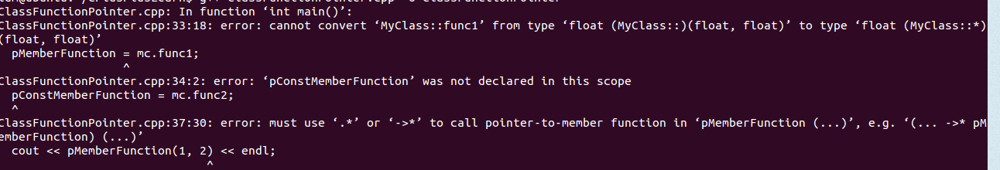
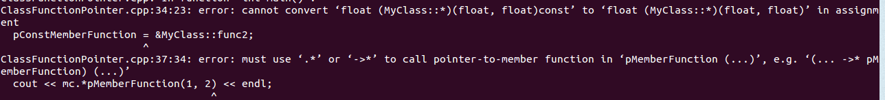

Linux下io多路复用之poll
Linux下io多路复用之select
大小端总结
细说字节对齐
C++之new
C++中提到new，一般会想到的是为对象分配内存，但是实际上它有三种含义：new operator, operator new, placement new,本文尝试着简单总结。
new operator
new operator也可以叫做“new expression”,是用来在堆上动态创建一个对象，它实际做了三件事情：获得一块内存空间，调用构造函数，返回正确的指针，当然如果是基本的类型，则不会调用构造函数。
new operator使用方法：1
Test * p = new Test(3); // 正常使用方法
实际可以拆分为三个步骤：1
2
3Test * p = (Test*)malloc(sizeof(Test));
p->Test::Test(3);
return p;
但是和这三个步骤的区别在于，如果malloc失败的处理，默认的new当malloc失败时候会抛出异常，调用new_handler，这个new_handler函数可以通过std::set_new_handler(void*)函数来改变。
operator new
new operator的第一步的分配内存操作实际是通过operator new来实现的，operator new默认首先调用分配内存的代码，尝试获得堆上空间，如果返回null就调用new_handler处理，然后继续循环操作这个过程，如果我们想要改变这个行为就可以重载operator new。
下面例子实现了调用new分配内存时候打印一句话：1
2
3
4
5
6
7
8
9
10
11
12
13
14
15
16
17
18#include <iostream>
using namespace std;
class Test {
public:
Test(int v) {value = v;}
void * operator new(size_t size) {
cout << "operator new" << endl;
return ::operator new(size); // 通过::operator new调用了原有的全局的new，实现了在分配内存之前输出一句话
}
private:
int value;
};
int main() {
Test * p = new Test(2);
return 0;
}
输出截图：
当重载了new时候同时也要重载delete.
placement new
placement new是用来实现定位构造，在分配好的内存上面构造对象，这个内存可以在堆上，也可以在栈上：1
2
3char t[sizeof(Test)];
Test * p = (Test*)t;
new(p)Test(3);
在使用时候要加上p->~Test()
什么时候需要使用placement new？当默认的new operator的对内存管理不能满足我们需要时候，我们可以利用placement new来进行自己的内存管理策略，STL的allocator就是这样做的，日后研究下。
C++内存布局
测试一下markdown使用
常用Markdown语法
深入理解函数指针
什么是函数指针
函数指针是一个指向函数的指针，函数指针表示一个函数的入口地址。使用函数指针的好处就是在处理“在运行时根据数据的具体状态来选择相应的处理方式”这种需求时更加灵活。
C/C++函数指针的语法
指向C语言函数和C++静态成员函数的函数指针
对于一个函数，函数类型是靠三个方面来确定的：
1.函数的参数个数;
2.函数的参数类型;
3.函数的返回值类型。
所以，要想表达一个函数指针也必须含有这三方面以确保完备性：
注意：函数指针名称必须加上括号，因为不加括号会产生二义性：
这样的定义形式定义了一个“返回类型为‘返回类型*’参数为(参数类型,参数类型,参数类型，…)的函数而不是函数指针了
指向C++非静态成员函数的函数指针
使用C++非静态成员函数的函数指针时，需要一个指向类的实例的this指针。
## 普通函数指针赋值和使用
### 赋值
1 | int (*pFunction)(float,char,char)=NULL; |
上面这段代码说明了两个问题：（1）一个函数指针可以多次赋值（想想C++中的引用）（2）取地址符号是可选的，却是推荐使用的。我们可以思考一下为什么取地址符号是可选的，在普通的指针变量赋值时，如上面所示，需要加取地址符号，而这里却是可选的？这是由于要同时考虑到两个因素（1）避免二义性（2）形式一致性。在普通指针赋值，需要加取地址符号是为了区别于将地址还是将内容赋给指针。而在函数赋值时没有这种考虑，因为这里的语义是清晰的，加上是为了和普通指针变量一致—“因为一致的时候就不容易出错”。
### 使用
1 | pFunction(10.0,’a’,’b’); |
上面这两种使用函数指针调用函数的方式都是可以的，原因和上面一样。
### 普通函数指针例子


可以看出函数指针的效率问题不一定，有时候快，有时候慢。
普通的函数调用会编译成直接跳转指令，例如 x86中的CALL LABLE，或者Arm中的BL LABLE。而函数指针会编译成间接跳转指令，例如x86中是CALL REG，Arm中就是BLR REG. 间接跳转的目标是在寄存器或内存中的，因此为了得到跳转目标，会引入地址的计算和访存。而直接跳转的目标是编码在指令内的，不需要任何多余的计算和访存。因此一般而言间接跳转的效率较低。当然函数指针的也有其优点。其优点就是可以有多个调用目标。因为间接跳转的目标在内存或寄存器中，是可以被修改的。而直接跳转的目标有且只有一个。在有多个目标的需求时，就只能使用函数指针。
C++非静态成员函数赋值和使用
赋值
在C++中，对于赋值，你必须要加“&”，而且你还必须在次之前已经定义好了一个类实例，取地址符号要操作于这个类实例的对应的函数成员上。
1 | MyClass mc; |
### 使用
在使用成员函数的指针调用成员函数时，你必须要加类实例的名称，然后再使用.或者->来使用成员函数指针。
1 | (mc.*pMemberFunction)(10.0,’a’,’b’); |
### C++静态成员&&非静态成员函数例子
首先要加取地址符号，而且是类的成员函数:
1 | pMemberFunction= MyClass::func1; //必须要加取地址符号 |
不然会出现错误：

另外Const函数的对应指针也要设置为const:

调用时候注意：要有对象—(mc.p)(a,b).

## 函数指针作为参数
1 | int pass_func_pointer(float (*pFunction)(float a,float b)) |
### 函数指针作为返回值
整型作为返回值的函数声明: int func(){}
整型指针作为返回值的函数声明： int func(){}
函数指针如果可以作为返回值，该怎么声明？首先要保证的一点就是返回的函数指针的类型必须是能够明显的表达在这个函数的声明或者定义形式中的，也就是说在这个形式中，要能够包含函数指针所对应的能够确定函数类型的信息：这个函数类型的返回值类型，这个函数类型的参数个数，这个函数类型的参数类型。
如果要函数指针对应的函数是返回值为浮点型，带有两个参数，两个参数都是浮点型，那么返回类型应该表达为下面的表达形式：
float (*)(float ,float )
所以对于以下形式：
float (* func(char op) ) (float ,float)
其具体含义就是，声明了这样一个函数：
1. 其名称为func，其参数的个数为1个；
2. 其各个参数的类型为：op—char；
3. 其返回变量（函数指针）类型为：float()(float,float)
## 解析singal函数
1 | void (*signal)(int signo,void (*func)(int)))(int); |
其具体含义为就是，声明了这样一个函数：
1. 其函数名称为：signal
2. 其参数个数为：2
3. 其各个参数的类型为：signo–int, func— void ()(int)
4. 其返回的变量（函数指针）的类型为：void()(int)
##使用函数指针数组
首先，考虑一个浮点数指针数组，数组的长度为10.我们都知道用下面的形式来定义：
1 | float * pFloatArray[10]; |
从形式上分析，用中括号明确了是定义指针变量还是定义指针数组这个语义。用数字10明确了这个数组能容纳多少个函数指针这个语义。形式上看，中括号是紧接在指针名称的后面再中括号里面是一个需要在编译时期间就能够确定的常数。
现在我们来类比函数指针数组的定义，定义一个指向函数指针类型为：float (
)(float,float)的函数指针数组，数组长度为10.正确的形式为：1 | float(* pFunctionArray[10])(float,float) |
从形式上看，这种定义方式和定义普通指针的定义方式是一致的：都是在指针名称后面紧接着一个中括号，然后里面是一个编译期间能够确定的常数。这种形式上的一致性，可以方便我们对形式的记忆，进而达到对内容的理解。
使用typedef重命名
使用typedef可以简化函数指针的定义，因为typedef可以定义新的类型：同样，在使用typedef定义函数指针类型的时候，也和普通的使用typedef引入新类型的方式不一样。1
typedef 已知类型 新类型;
现在我们要将float (*)(float,float)类型声明为一种新类型，按照上面的方式，貌似为：typedef float(*)(float,float) fpType;然而，前面的经验告诉我们应该这样定义:1
typedef float(*fpType)(float,float);
这样我们就可以用fpType来表示float (*)(float,float)这种类型了。所以定义一个新的指向float (*)(float,float)类型的指针变量的时候，我们就可以采用下面这种形式了：1
fpType pFunction;
在定义函数指针数组的时候可以这样定义：1
fpType pFunctions[10];
在定义函数指针类型参数时可以这样定义：1
void func(fpType pFunction);
在定义函数指针类型的返回值时可以这样定义：1
fpType func(int a);
现在我们再来看一下，unix中的那个signal函数，其形式为：1
void (*signal)(int signo,void (*func)(int)))(int);
现在我们定义一个类型为：1
typedef void (*pSgnType)(int);
这样上面的函数就能表达为：1
pSgnType signal(int signo,pSgnType func);